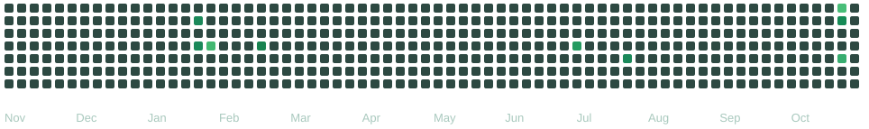

Practice · Data structures · Algorithms
Algorithmic problem solving.
I use deliberate practice to sharpen how I reason about data structures, complexity, edge cases, and implementation choices. This page shows a dated snapshot of my LeetCode profile.
Problems solved
Practice activity
Languages used
Selected topic coverage
Activity over the past year
9 active days
Snapshot reconstructed from a profile screenshot dated October 30, 2026. Language and topic counts can overlap; visit LeetCode for current statistics.
Problem-solving habits
Reason through the structure, then write the code.
The practice I find most valuable is identifying the right representation and invariant, testing edge cases, and explaining the time and space costs of a solution.
Problems in the recent snapshot
Examples visible on the profile include Reverse Linked List, Merge Intervals, Rotting Oranges, and Course Schedule II.
See the current profile →Engineering beyond practice
See the systems I’ve built.
My work spans cloud architecture, data products, production reliability, and an independent search engine built from crawling through ranked retrieval.